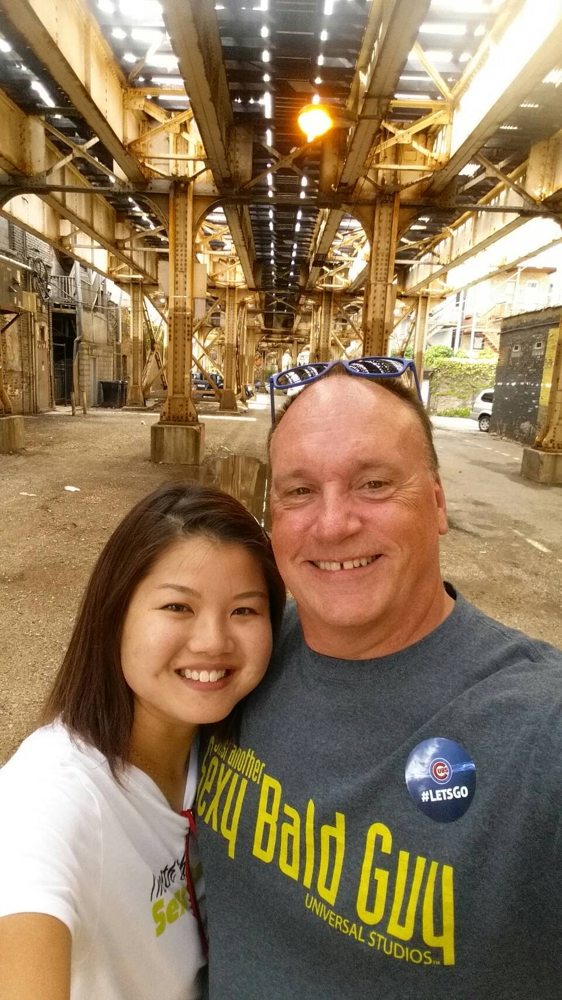
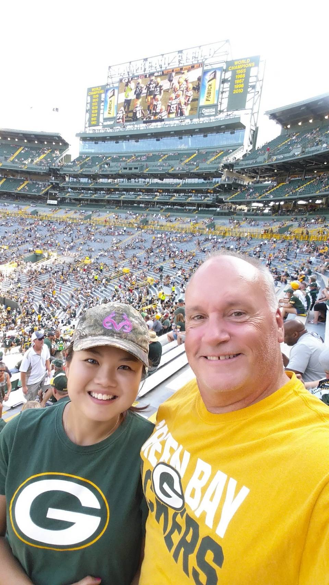

Dakota and Hank
This website is dedicated to Charles Hein, aka Chuck or Mr. Charles. I’ve known Chuck for 7 years and counting.
Chuck was born and raised in Omaha, NE. He spent his career at Nebraska Furniture Mart for 34 years and plan to retire there in a few years.
He has 2 children, 1 in college, 1 in high school. He has two dogs, Dakota the Lab and Hank the Great Pyrenees. He allergic to cats so he has cat decorations instead.
He loves rock bands from the past and has several
favorite artists that he considers to have pure talent. I can usually find him in the garage with speakers blasting a tune depending on his mood.
Hobbies
Man and his bikeWe found the buffalo!
Chuck can be a speed devil, but he also tells me ‘Speed Kills.’
He loves riding his motorcycle. He took the kids for a summer vacation back in 2009 and ran into the Sturgis rally happening at the same time.
That started his long time affair with riding. He bought himself a 2011 Harley Davidson Fatboy with limited edition paint.
He also has a Chevy Silverado and occasionally refers himself as the Silverado Man. After that, going to Sturgis each summer is always on his list of
vacations for the year. Needless to say, he took me to my first ever Sturgis rally in 2014. We love seeing the buffalo in the Black Hills.
Full Throttle Saloon is his favorite spot to hang out at.
Sports

After a Cubs game

At Green Bay
Chuck loves sports as well, some of his favorites are golf, football, baseball and basketball.
He’s taken me to my first baseball and football games. I must admit the hotdogs are what convinced me to go.
He likes going to the gym, working out is a past time of his. He used to play high school football but an injury put an end to it.
Cancun
At Chichen ItzaAt Isla Mujeres
About 2 years ago, he decided he wanted to take a trip to Cancun. The last time he went was in 1997. This was our first international trip together.
From that first trip, we’ve gone back to Cancun 2 more times. He loves snorkeling, crashing the waves and enjoying a cold beer by the pool. We made our first trip to one of the Seven
Wonders of the World, Chichen Itza. Also went to a nearby island, Isla Mujeres.
Cancun also introduced him to good quality Tequila. Too much alcohol and he becomes a happy rambling fool, no filter.
He just blurts out what comes to mind.
I’ve had to tell him to either stop drinking or stop talking.
Burgers
Like me, Chuck enjoys delicious foods. I've helped him expand his taste palete. He learned how to eat sushi with me and other asian dishes that I've made at home.
I do most of the cooking at home, but he is the grill master. I must say that his burgers are the best.
He insists on fresh, never frozen 80% lean hamburger that is largely shaped, about ½ - ¾ inch in thickness. That way, he says, the meat is cooked thoroughly and evenly.
Meat shrinks after being cooked, so shaping it large will help reduce the effects of shrinking.
True story, it is a juicy burger every time he makes them.
Contact
There is more to Chuck than time allows so I will stop here. I hope this brief site was able to give you an idea of how he enjoys life to the fullest.
Please email for any questions.